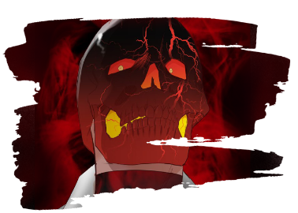
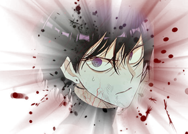
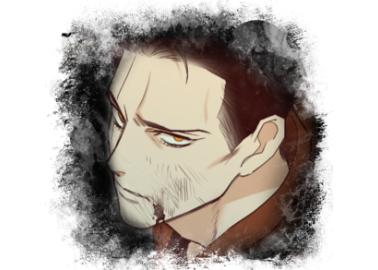

한 번 사망했으나 악마의 힘으로 되살아난 사람.
외모는 보통 사람과 동일하나 사실상 악마에 가깝
다. 사고사, 타살, 자살 등으로 수명을 다 살지 못한
사람만이 묘지기가 될 수 있어 어릴수록 묘지기가
되기 쉽다. 대부분의 경우 악마와 묘지기는 적대 관
계이며, 묘지기는 악마의 심장을 먹고 회복을 한다.
'권능'이라는 힘을 써서 피를 무기로 바꿀 수 있다.
대부분 피로 총을 만들어 쏘지만
검이나 철퇴를 만들어 쓸 수 있다.
아주 옛날부터 있었으며,
최초로 결집한 기록이 있는 곳은 영국이다.
일반 사람들은 악마와 묘지기를 감지할 수 없고
묘지기들은 숨어서 산다.
캐릭터 소개

파블 패스모어
겉모습과 달리 깝죽거리며 유쾌한 성격으로
유머틱한 모습을 보이고,
진지할 때는 진지하다.
악마숭배자에게는 가차없이 총질하며
클래식 리볼버를 즐겨 사용한다.
계약한 군단장은 호라.
봉인된 일곱 군단장 중 가장 강하다.
한 이 솔
본작의 주인공으로 상설고등학교 1학년
사격부(25m 부문) 여학생이다.
뱀의 제안을 받아들이는 동시에
뱀과 계약하고 고통으로 인해 정신을 잃는다.
그 후 묘지기가 되어 지하로 넘어가게 된다.
경기용 화약총을 사용한다.

서 설 하
시니컬하고 까칠하며 대인관계에 서투르다.
싸가지 없는 말투에 태도도 건방지지만,
백한에게 과한 존경심을 보인다.
설하가 악마에게 괴로움을 말하자
악마가 설하네 가족을 죽였다. 그 후 투신자살
했으나 묘지기가 되었다.
쌍권총을 사용한다.

백 한
무뚝뚝하고 말 수가 없으며 말보다 행동파다.
1910년에 사망했으며 죽을 때 흘린 피로 만든
환도를 쓴다. 이 검으로 자기 자신을 찌르면 얼
굴이 영노탈처럼 변하고 일시적으로 강해지는
영노화가 일어난다.
이 때 자칫하면 악마가 될 수 있으나
고집이 너무 세서 악마는 못 된다고 한다.
번즈 브렌도프
영국에서 온 17세기 후반 출신 묘지기.
머리와 얼굴에 큰 화상 자국과
목에 자잘한 흉터가 있다.
구식 리볼버를 사용한다.
유능한 인물이지만 인성이 좋지 않다.
묘지기들을 위한다면서 다른 묘지기들을
마음대로 부려먹거나 공격하고 다닌다.